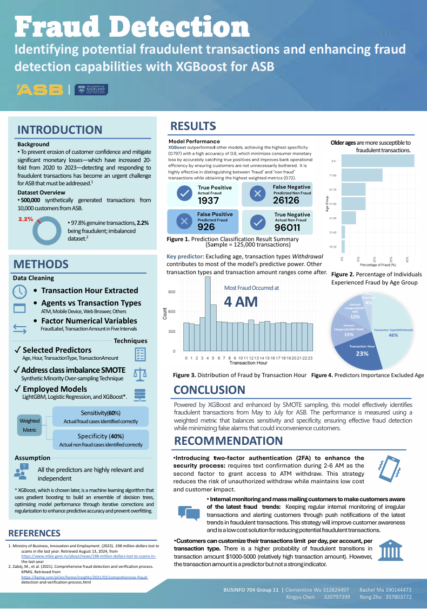

Data Cleaning
Extracted transaction hour, grouped transaction channels, and prepared fraud labels and categorical fields.
R · Fraud Analytics · XGBoost · SMOTE · Risk Management
An R-based classification project using SMOTE and XGBoost to identify fraudulent banking transactions while balancing detection performance, false alarms, and customer impact.
This project addressed a fraud detection challenge in a banking context, where the goal was to identify potentially fraudulent transactions while reducing false alarms that could inconvenience genuine customers. The dataset contained 500,000 synthetically generated transactions from 10,000 customers, with only 2.2% labelled as fraudulent, creating a highly imbalanced classification problem.
My group used R to clean and engineer transaction-level features, compare multiple classification models, apply SMOTE to address class imbalance, and select XGBoost as the final model based on a weighted metric balancing sensitivity and specificity. The final poster received a Best Visual Award.
The modelling process was designed to balance predictive performance with practical fraud response, recognising that both missed fraud and excessive false alarms have business consequences.
Extracted transaction hour, grouped transaction channels, and prepared fraud labels and categorical fields.
Selected predictors including age, transaction hour, transaction type, and transaction amount category.
Split the transaction data into training and testing sets with stratification on the fraud label.
Applied SMOTE to address the strong class imbalance between genuine and fraudulent transactions.
Compared candidate classification models using sensitivity, specificity, and business-weighted performance.
Selected XGBoost as the final model based on its ability to balance fraud detection and false alarm control.
The poster summarises the business challenge, modelling approach, key predictors, model results, and customer-focused fraud prevention recommendations.

Since fraudulent transactions represented only 2.2% of the dataset, the model needed to balance sensitivity with specificity rather than simply maximise overall accuracy.
Fraud patterns were linked to transaction timing and type, with the poster identifying 4 AM as a key fraud concentration point and withdrawal as an important predictor after excluding age.
The weighted metric reflected a business trade-off: detecting actual fraud while limiting false alarms that could disrupt genuine customers.
The project recommended targeted two-factor authentication, fraud trend alerts, internal monitoring, and custom transaction limits.
The webpage summarises the project for a business analytics audience. The original poster and R code are available as supporting materials.